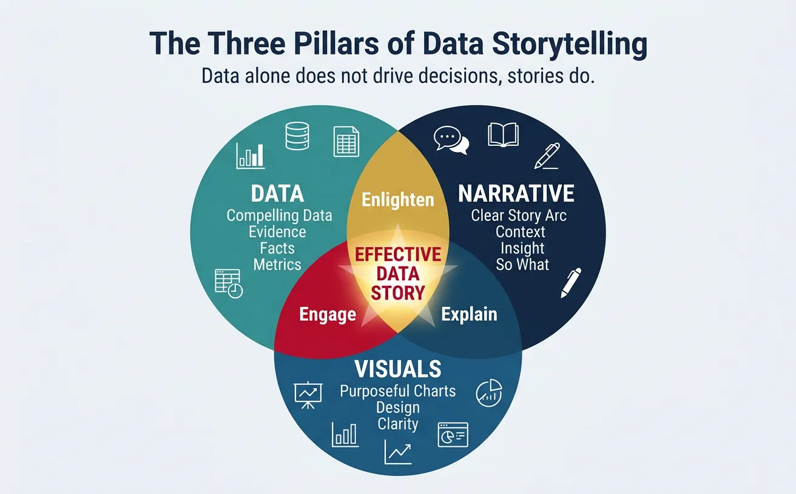
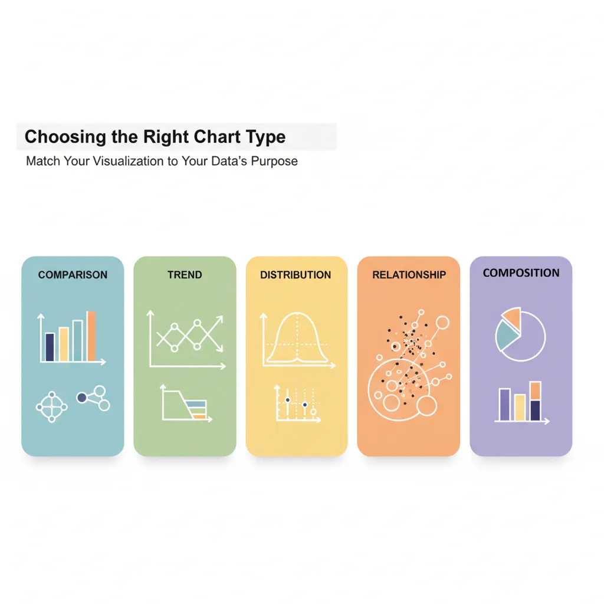
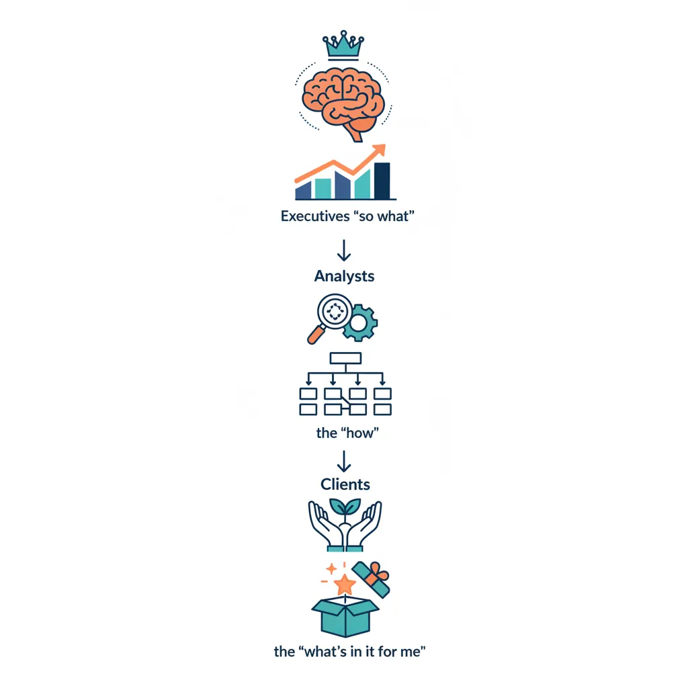
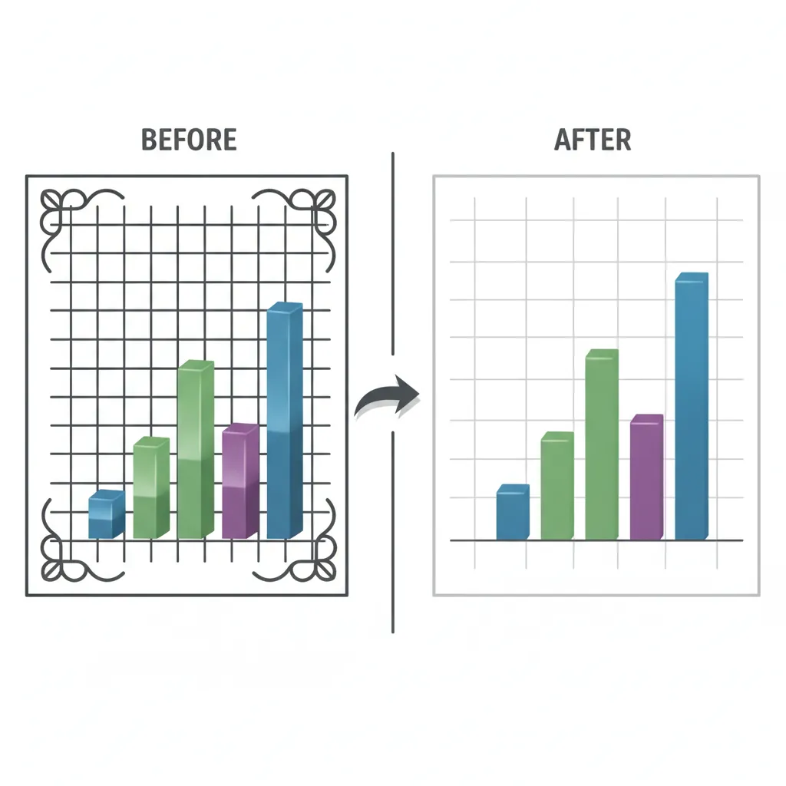

1. Introduction
Data alone doesn't drive decisions—stories do. Data storytelling bridges the gap between analytics and action by making insights memorable, persuasive, and actionable.

Data-Driven Decisions
Introduction to Business Analytics & DDDM
Analytics maturity, data-driven culture, business valueDefining & Tracking KPIs
OKRs, leading/lagging indicators, scorecard designDashboard Design & BI Tools
Tableau, Power BI, dashboard best practices, data vizExperimentation & A/B Testing
Hypothesis testing, control groups, sample sizingStatistical Significance & Interpretation
P-values, confidence intervals, effect size, power analysisDecision Frameworks & Structured Decision Making
Decision matrices, Bayesian thinking, risk analysisData Collection & Quality Management
Surveys, ETL, data governance, cleaning pipelinesBusiness Storytelling & Visualization
Narrative structure, chart selection, audience designPredictive Analytics & Forecasting
Regression, time series, ML models, forecasting methodsData-Driven Culture & Organizational Adoption
Change management, data literacy, organizational buy-inFunction-Specific Data Applications
Marketing, finance, operations, HR analyticsCapstone Projects (Portfolio-Ready)
End-to-end analytics projects, portfolio buildingAdvanced Analytics & Automation
ML pipelines, AutoML, real-time analytics, AI integrationWhy Data Storytelling?
- Memory: People remember stories 22x better than facts alone
- Engagement: Stories activate emotional centers, not just analytical ones
- Persuasion: Narrative structure guides audiences to conclusions
- Action: A clear story with a call-to-action drives decisions
Data vs. Story
| Data Dump | Data Story |
|---|---|
| "Q3 revenue was $12.4M" | "Q3 revenue grew 18% to $12.4M, our fastest quarter since 2021—driven by the new pricing model" |
| "NPS dropped from 45 to 38" | "Customer satisfaction is declining: NPS fell 7 points this quarter. Support response times are the #1 complaint—and we have a plan to fix it" |
2. Narrative Structure
Every compelling data story follows a structure that guides the audience from context to insight to action.
The Story Arc
Classic Story Arc for Data
★ Climax (Key Insight)
/ \
/ \ ↘ Resolution (Recommendation)
/ \ /
/ \/
/ ↗ Call to Action
/
──────────────────────────────────
Setup Conflict Resolution
(Context) (Problem) (What to do)
- Setup (Context): Where are we? What's the baseline?
- Conflict (Problem): What changed? What's the challenge?
- Climax (Insight): What did we discover? The "aha" moment
- Resolution (Recommendation): What should we do about it?
- Call to Action: What specific next step do you need from the audience?
SCR Framework (Situation-Complication-Resolution)
A simpler structure from McKinsey, ideal for executive communication:
- Situation: Neutral statement of current state
- Complication: The problem or change that creates tension
- Resolution: Your recommendation/answer
Example:
- S: "We set a goal of 20% market share by year-end"
- C: "We're currently at 14%, and our main competitor just launched a cheaper alternative"
- R: "We recommend accelerating the Q4 promotion and expanding into the SMB segment"
Pyramid Principle
Lead with the answer, then provide supporting evidence. Executives want the "so what" first.
Pyramid Structure
┌──────────────────────┐
│ MAIN MESSAGE │ ← "We should invest $2M in
│ (Answer/Rec) │ the mobile app"
└──────────────────────┘
│
┌────────────────┼────────────────┐
▼ ▼ ▼
┌───────────────┐ ┌───────────────┐ ┌───────────────┐
│ Supporting │ │ Supporting │ │ Supporting │
│ Argument 1 │ │ Argument 2 │ │ Argument 3 │
└───────────────┘ └───────────────┘ └───────────────┘
"60% of users "Mobile users have"Competitors have
are mobile" 3x higher LTV" captured 40%"
Structure a compelling data story with audience, key message, supporting data, and call to action. Download as Word or PDF.
All data stays in your browser. Nothing is sent to or stored on any server.
3. Visualization Design
Charts should reveal insights, not just display data.

Chart Selection
| Purpose | Best Chart Types | Avoid |
|---|---|---|
| Comparison | Bar chart, grouped bar | Pie chart (hard to compare) |
| Trend over time | Line chart, area chart | Bar chart (implies discrete) |
| Part-to-whole | Stacked bar, treemap, pie (≤5 slices) | 3D pie (distorts proportions) |
| Distribution | Histogram, box plot | Line chart (implies continuity) |
| Relationship | Scatter plot, bubble chart | Bar chart (loses correlation) |
| Geographic | Choropleth map, bubble map | Pie chart on map (cluttered) |
Visual Hierarchy
Guide the eye to the most important information:
- Title: State the insight, not just the topic ("Revenue grew 18%" not "Revenue Chart")
- Highlight: Use color or bold to emphasize key data points
- Annotations: Add text callouts for critical values or events
- Remove clutter: Eliminate gridlines, borders, and legends when possible
Color Strategy
- Use gray as default: Most data should be gray; only highlight what matters
- One accent color: Draw attention to the key insight
- Semantic colors: Green = good, red = bad (but verify for colorblindness)
- Consistency: Same color for same category across all charts
The "Squint Test"
Squint at your chart. Can you still see the main takeaway? If yes, your visual hierarchy is working. If everything blurs together, you need more contrast.
4. Audience Adaptation
Different audiences need different depths and formats.

Executive Presentations
- Lead with "so what": Don't build suspense; answer first
- One message per slide: If you have two points, make two slides
- Be ready to go deeper: Have appendix slides for questions
- Anticipate questions: What will the CFO/CEO ask? Have data ready
- Time: 5-10 minutes max for your main points
Technical Audiences
- Show methodology: How was data collected? What's the sample?
- Include confidence intervals: Quantify uncertainty
- Provide code/queries: Enable reproducibility
- Welcome questions: Technical audiences will probe assumptions
Stakeholder Mapping
| Audience | Key Questions | Format Preference |
|---|---|---|
| C-Suite | So what? What action? | 1-page summary, verbal brief |
| Middle Management | How does this affect my team? | 5-slide deck, dashboards |
| Analysts/Engineers | How did you get this? Can I trust it? | Detailed report, notebooks |
| External (Clients) | What's in it for me? | Polished deck, visuals-heavy |
5. Tools & Techniques
Presentation Tools
| Tool | Best For | Notes |
|---|---|---|
| PowerPoint/Google Slides | Executive presentations | Universal, easy to share |
| Tableau/Power BI | Interactive dashboards | Let users explore data |
| Jupyter Notebooks | Technical storytelling | Code + narrative + visuals |
| Canva | Infographics, marketing | Design-focused |
| Observable/D3.js | Custom interactive visuals | Requires coding |
Annotation Techniques
- Direct labels: Put values on the chart instead of a legend
- Callouts: Text boxes pointing to specific data points
- Reference lines: Show targets, averages, or benchmarks
- Event markers: Mark key dates (product launch, policy change)
6. Common Pitfalls
Chart Junk
Elements that add no information but clutter the visual:

- 3D effects (distort perception)
- Decorative images (icons that don't encode data)
- Heavy gridlines (compete with data)
- Excessive colors (when one would do)
- Unnecessary legends (when direct labels work)
Misleading Visuals
Avoid These Mistakes
- Truncated Y-axis: Starting at non-zero exaggerates differences
- Dual Y-axes: Can imply false correlation
- Cherry-picked time ranges: Hiding inconvenient trends
- Inconsistent scales: Making different charts incomparable
- Area distortion: Doubling diameter quadruples visual area
7. Conclusion & Next Steps
You've now covered the key concepts in this section of data-driven decision making. Here's a summary of what you've learned:
Key Takeaways
- Lead with the insight: Don't bury the lead; answer first
- Use narrative structure: Setup → Conflict → Resolution
- Choose charts by purpose: Comparison, trend, part-to-whole, etc.
- Highlight what matters: Use color and annotation strategically
- Adapt to your audience: Executives want "so what"; analysts want "how"
- Remove chart junk: Every element should serve a purpose
In the next article, we'll cover Predictive Analytics & Forecasting—using data to see into the future.